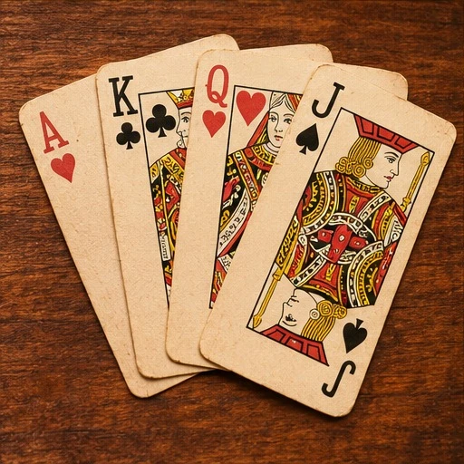
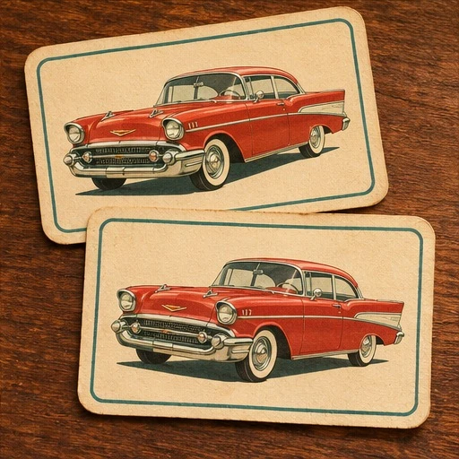
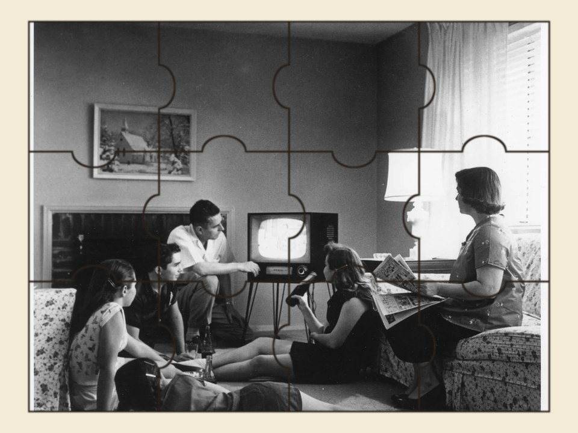

More games, one quiet link
REVIEW ONLY. Jigsaw is approved for this fourth game-card proposal, not production. The Word Unscramble → board-games mapping and category groups remain unconfirmed. The separate editorial jigsaw tile is not included. Destination links open existing live games for reference.
AI-created period illustration

Word Unscramble
Familiar words, mixed up for a little fun.
Play now →More board gamesSource mapping unconfirmed: this is currently Word Unscramble, not Scrabble. Board-game link is shown here as an option only.


Jigsaw Puzzle
Added as the fourth featured GAME CARD in this review, per Shai. Not the separate editorial jigsaw tile.
Play now →More puzzle gamesPuzzle games
Existing catalog games only. New game prototypes are not listed.
Back to the cards ↑Board games
Existing catalog games only. New game prototypes are not listed.
Back to the cards ↑Card games
Existing catalog games only. New game prototypes are not listed.
Back to the cards ↑Memory games
Existing catalog games only. New game prototypes are not listed.
Back to the cards ↑